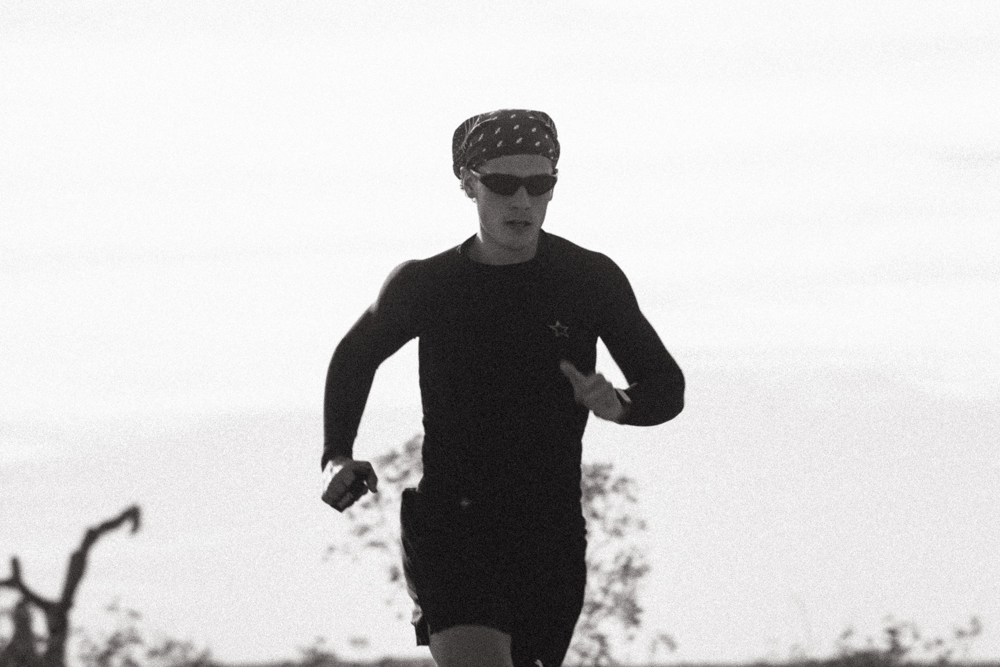
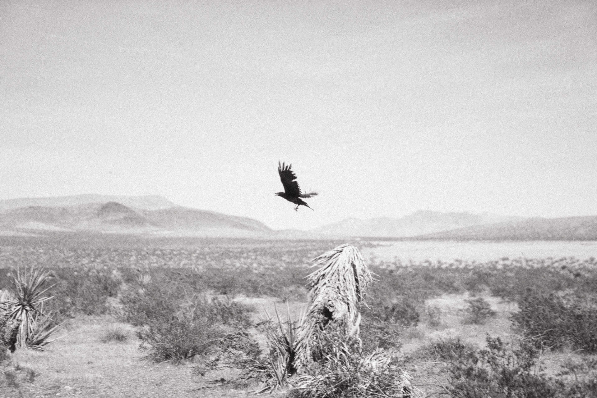

Nacho Guerin
Trail · Ultra · TSP
800+km trail
TSPLA → LV

TRAIL · ULTRA · AVENTURA
fuera del asfalto
de campo, documentados
personas. no más.
Somos cuatro personas que corren montañas, cruzan cordilleras, y lo documentan. El producto no es el running — es lo que pasa cuando empujás hasta no saber cuánto falta, y alguien lo está grabando.
| Run Club | Nosotros |
|---|---|
| Evento masivo, público, abierto | Equipo cerrado. Cuatro personas con identidad propia. |
| AM, café, playlist | Aventuras extremas documentadas desde adentro |
| Urbano, predecible, repetible | Fuera de la ciudad, fuera del mapa conocido |
| Foto linda en Palermo | Producción de campo — en la montaña, en el asfalto, en el momento |
| Comunidad como número | Trayectoria como credencial |
Todos con kilómetros encima. Todos con presencia en redes. Nadie que haga trail porque está de moda.

Todo lo que sale de acá es producido donde se corre. En la montaña, en el asfalto, en el momento. No en un estudio.
280 km. Sin guía, sin crew, sin red. Documentado en tiempo real desde el primer paso hasta el último.
Sin reglas. Sin permiso. Un relay de 600 km de punta a punta. Lo que no existe en el país, creado por nosotros.
Una semana donde termina el mapa. Sin agenda. Solo correr, grabar, y entender qué somos cuando no hay señal.
Buscamos personas con trayectoria real en trail o ultra. Con presencia en redes. Con ganas de construir algo que no existe todavía en Argentina. Si eso suena a vos, hablemos.